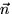
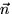

Donades dues rectes, en representacions qualsevols, pot ser necessari calcular les coordenades del punt intersecció (si existeix). En molts d'aquests casos, acabarem resolent un sistema lineal de dues equacions amb dues incògnites. Aquests sistemes estaran mal condicionats (i per tant la seva solució numèrica serà poc fiable) quan les dues rectes siguin aproximadament paral·leles. Per tant hem de procurar evitar haver de calcular interseccions en aquests casos. Observeu que des del punt de vista de la geometria resulta molt clar perquè aquests sistemes són inestables quan les rectes són quasi paral·leles: en aquest cas una lleugera pertorbació d'una de les rectes produeix un fort canvi en la posició de la intersecció.
Un exemple és el càlcul de la intersecció de dues rectes donades cadascuna d'elles per dos punts de pas, que deriva en el sistema
El cas més senzill és quan necessitem intersecar una recta en
alguna de les formes paramètriques amb una recta donada en forma
implícita. En aquest cas, substituir la forma paramètrica en el lloc
del punt genèric que apareix a la forma implícita dóna lloc a una
única equació lineal en el paràmetre. Per exemple, si volem
intersecar la recta definida per un punt P i un vector
direcció  , amb la recta definida per un punt R i
una normal , substituint l'equació paramètrica de la
primera a l'equació implícita de la segona tenim l'equació (lineal)
, amb la recta definida per un punt R i
una normal , substituint l'equació paramètrica de la
primera a l'equació implícita de la segona tenim l'equació (lineal)
Amb el que podem calcular fàcilment el valor del paràmetre al punt d'intersecció:
Observeu que en aquest cas també resulta problemàtic el cas en que
les rectes siguin aproximadament paral·leles, en el qual el
denominador de la darrera fracció serà aproximadament zero. No és
sorprenent, tota vegada que hem pogut veure abans que aquesta
dificultat tenia una explicació geomètrica, i ara estem tractant la
mateixa geometria amb una formulació diferent.